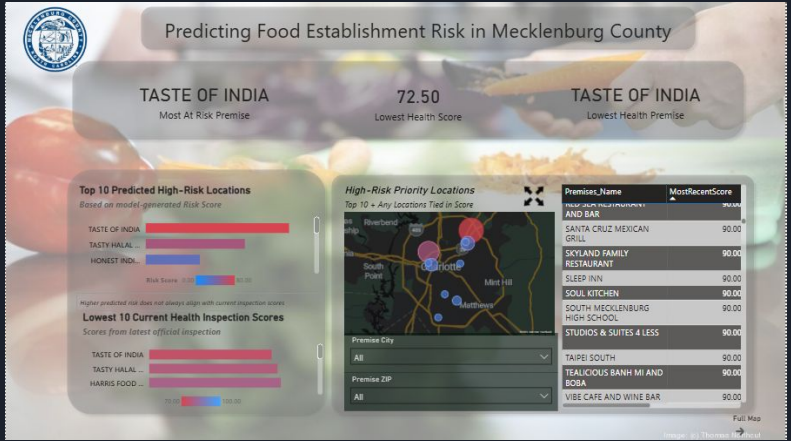
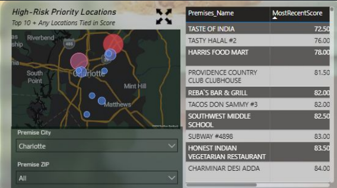
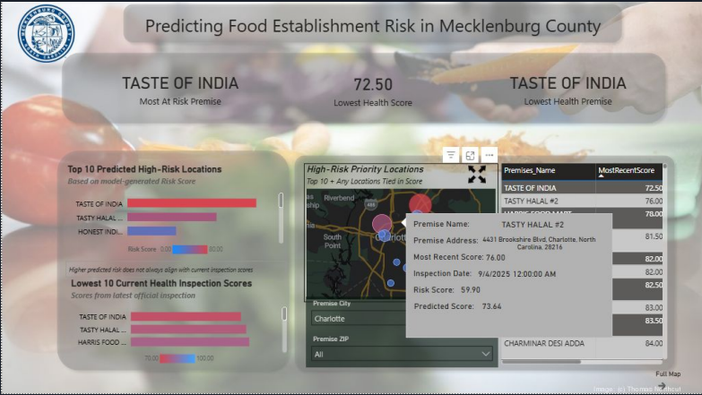

Food Inspection
Risk Analytics
Turning restaurant inspection history into a clearer view of current performance, emerging risk, and where attention may be needed sooner.
Power BIDAXPythonscikit-learnGeospatial analyticsProject overview
This project uses Mecklenburg County restaurant inspection records to build decision-support views for interpreting public health data. The dashboard separates observed inspection results from predicted decline so users can see what is known and what is estimated.
- Created DAX measures using recent inspection scores and trends to produce a risk indicator.
- Added geographic views to reveal clusters of higher-risk establishments.
- Refined labels, colors, and information hierarchy for faster interpretation by non-technical users.
- Developing a companion Python classification workflow using inspection and violation histories; the modeling work is in progress.
Dashboard previews
Selected views from the interactive Power BI dashboard.



Technical approach
The analytics workflow combines data preparation, feature engineering, trend-based scoring, and visual communication. The next modeling stage compares classification approaches for higher-risk detection and evaluates how inspection patterns and establishment characteristics contribute to predictions.